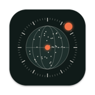

DynamicFM随机一站，听见世界。
DynamicFM 带你收听全球数万个网络电台：按下播放，目的地交给运气；或者转动卫星地球，点一个光点就能听。
常见问题
- 有些电台连不上？
- 电台由世界各地的电台自己运营，可能临时停播，或只对部分地区开放。随机换台时，连不上会自动跳到下一站；你自己选的电台连不上时，会提示你换一个。
- 收藏会同步到其它设备吗？
- 不会。收藏只保存在当前设备上，删除 App 时会一起删除。
- 电台目录从哪里来？
- 来自社区维护的开放目录 Radio Browser。想添加或修正电台信息，可以直接在那里提交。
- 锁屏后还能听吗？
- 可以。锁屏界面和控制中心可以暂停、播放和切换上一站、下一站。
联系我们
遇到问题或有建议，请发邮件至 ftjn213@126.com，请注明你的设备型号和系统版本。
Hear the world, one random station at a time.
DynamicFM plays tens of thousands of internet radio stations worldwide. Press play and let chance pick the destination, or spin the satellite globe and tap a dot to listen.
FAQ
- Why won't some stations play?
- Stations are run by broadcasters around the world and may be temporarily off the air or limited to certain regions. When tuning randomly, the App skips to the next station automatically; when you pick a station yourself, it lets you know so you can try another.
- Do favorites sync between devices?
- No. Favorites are stored only on the current device and are removed when you delete the App.
- Where does the station list come from?
- From Radio Browser, a community-maintained open directory. You can add or correct stations there.
- Does it keep playing when my phone is locked?
- Yes. Use the Lock Screen or Control Center to pause, play, or skip between stations.
Contact
For help or feedback, email ftjn213@126.com and include your device model and iOS version.